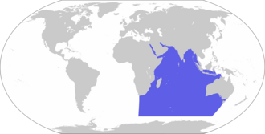

Océanos donde habita la ballena azul
Las ballenas azules pueden encontrarse en el Atlántico Norte, desde el Mar del Norte hasta el Golfo de México. También habitan el Atlántico Sur, especialmente entre Brasil y la costa suroeste de África.
En el Pacífico Norte, se encuentran desde Alaska hasta Baja California. En el Pacífico Sur, suelen encontrarse entre Chile y Australia, incluyendo áreas frente a Nueva Zelanda.
Las ballenas azules se encuentran a lo largo del Océano Índico, desde las costas de Madagascar y Somalia hasta el sur de la India, Sri Lanka y Australia Occidental.
